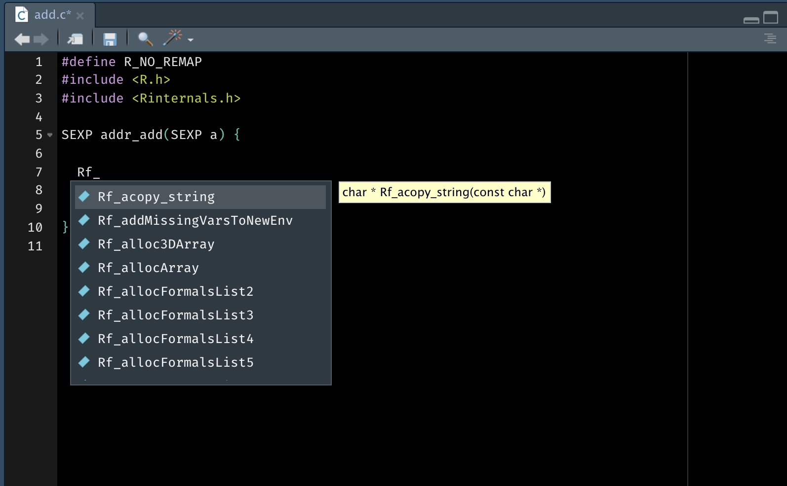
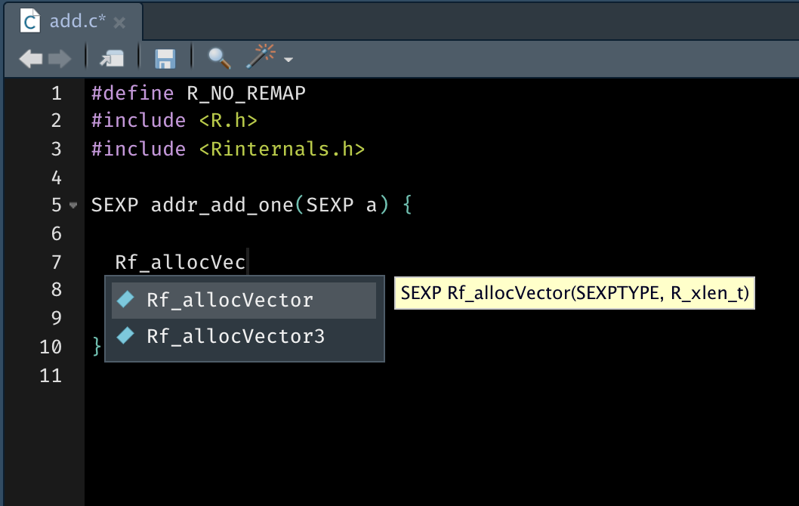
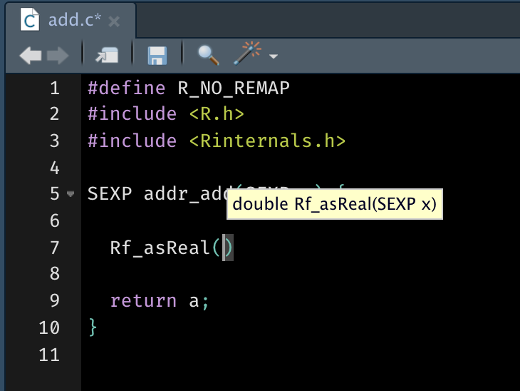

usethis::create_package(path = "~/path/to/addr")Introduction
This post is designed to help you get up and running with an R package that uses C code, teaching the absolute minimum required to get going. Over the past few days, I learned a lot about working with packages that call C. It’s not quite as pleasant as working with C++ and Rcpp, but as you start to figure it out, it really feels like a superpower.
Superpower or not, as Jim Hester says, if you have the choice it is much easier to use Rcpp, and my advice would also be to start there. I created this guide because I was contributing to a project that used C, and was frustrated by the lack of resources for beginners.
That said, it’s a steep learning curve. Yes, Writing R Extensions has much of what you need to know, but I’m not big on the whole RTFM idea, and I think posts that actually get you up and running so you can start exploring on your own are valuable.
Package
So let’s go. I’m going to create a C function that takes one numeric argument of length 1, and adds 1 to it. Then, I’ll show how to call it from R so users of the package can actually interface with it. Exciting.
We need the structure for a package, so let’s use some usethis helpers to get started. We’ll call the package addr, and you should replace path with the path to the location you want the package created at.
If you work with RStudio, this should open a new RStudio instance with the addr package opened up. Switch over to that.
Optional git
If you are so inclined and have everything hooked up (you’ve used git before on your computer), you can set up git and GitHub for this repo. I’ll do it so you can see the final product, along with all of the commits along the way. You can find my end result here.
# This will restart RStudio
usethis::use_git()
# Then call this to use github
# for this package
usethis::use_github()roxygen2
Some of the usethis functions we are going to call require roxygen2 to be used for creating documentation (and it makes our lives a heck of a lot easier). Let’s set that up next. The easiest way is to just call:
devtools::document()Alternatively, on a Mac I can call CMD+Shift+D. This should just add some information about roxygen2 to the DESCRIPTION file.
The other thing we will want to do is create a “package doc” .R file. Other usethis functions called later will use this file to store useful information automatically. Basically, this is just a .R file named addr-package.R.
usethis::use_package_doc()The contents of this look like:
#' @keywords internal
"_PACKAGE"
# The following block is used by usethis to automatically manage
# roxygen namespace tags. Modify with care!
## usethis namespace: start
## usethis namespace: end
NULLThe usethis information is going to be inserted between the usethis namespace: start and usethis namespace: end lines as we go along.
Can you C?
Let’s work on our first C function. Assuming you are in RStudio and in the current addr project, let’s create our first C file. There’s a usethis helper for that too.
usethis::use_c("add")Wow. That did a lot more than just create a C file. I get something like this:
#> ✔ Creating 'src/'
#> ✔ Adding '*.o', '*.so', '*.dll' to 'src/.gitignore'
#> ✔ Adding '@useDynLib addr, .registration = TRUE' to 'R/addr-package.R'
#> ● Run `devtools::document()` to update 'NAMESPACE'
#> ✔ Writing 'src/add.c'
#> ● Modify 'src/add.c'So what happened here?
A new directory was created,
src/. This is where all of your C files go.Multiple types of files were added to a
.gitignoreinsrc/. This is very helpful, as these 3 types of files,.o,.soand.dllare ones that would be created by our package when the C code is compiled, or “built” if you are familiar with R packages. In the same way that we wouldn’t commit a built R package to github, we don’t commit these files either.Some information was added to
addr-package.R, and we get a suggestion todocument().A new file,
src/add.cwas added, and then it opened in RStudio. Great! We will work on this file in a moment.
What’s this information that got added to addr-package.R? If we open up addr-package.R right now, we will see:
## usethis namespace: start
#' @useDynLib addr, .registration = TRUE
## usethis namespace: end
NULLThe second line here is a roxygen comment added by use_c(), and it is an important one! Basically, it is the way we eventually tell R that we should be looking for any C routines (functions) that we have “registered” (i.e. exposed to the R side), so we can actually call them from R.
Really, this information needs to be in the package NAMESPACE file, which contains the information on what functions are imported to and exported from your package, along with information about external code like this. That’s why a suggestion to document popped up, as roxygen2 will take care of that for you:
devtools::document()If you got an error while documenting that looked like
getDLLRegisteredRoutines.DLLInfo(), don’t be alarmed. We just don’t have any C code for it to load.Check out the NAMESPACE file and you should see:
useDynLib(addr, .registration = TRUE)addr_add_one()
Now we are ready to work on our C function. Open up that add.c file if it isn’t open already. You should see this at the top:
#define R_NO_REMAP
#include <R.h>
#include <Rinternals.h>The second two #include lines give us access to the C-level R API. If you aren’t familiar with includes or header files, for now think of them as calling library() on a package to get access to its functions for your own use.
The first line, #define R_NO_REMAP, purposefully comes before the other two, and prevents a “re-mapping” of the API functions from a standardized name of Rf_<fn> to just <fn>. I think it’s pretty good practice to prevent this remapping, as it makes it clear to us what functions are from the R API (and it works really well for finding new functions with auto-complete!).
OKAY, now let’s write some C code. Go ahead and add these lines to the file:
#define R_NO_REMAP
#include <R.h>
#include <Rinternals.h>
SEXP addr_add_one(SEXP a) {
SEXP out = PROTECT(Rf_allocVector(REALSXP, 1));
REAL(out)[0] = Rf_asReal(a) + 1;
UNPROTECT(1);
return out;
}…okay. This looks foreign. So many questions, I know, I had them too. I’ll tackle as many as I can think of. First, a broad overview of what this code does:
- Take in a single argument,
a. - Create an object that we will assign the result to,
out. This is a numeric vector of length 1. We also protect that object from the garbage collector. - Add 1 to
aand assign it toout. - Unprotect our result,
out, as we are about to return it. - Return the result.
What is a SEXP?
Good question. It’s called an S-Expression, don’t ask me how to pronounce the shorthand notation, and I think it originated in the functional language, Lisp.
Just think of a SEXP as a container that is able to represent any kind of R object, but at the C level. This means that an R list can be a SEXP, so can a matrix, so can a single logical value.
Why are there so many explicit types?
Meaning, why is the argument SEXP a and not just a? Why is the return value, out, created as SEXP out = not just out =?
C is a statically typed language, unlike R. Whereas in R we have the flexibility to create variables of any type without specifying the type in advance, in C we have to specify the type of every single variable ahead of time. This comes with the benefit of speed, and is one of the reasons C is so much faster than R.
Allocation and protection
In C, creating new R objects is a bit more complicated than what you’d do at the R level. We know that we are going to take in a numeric vector of length 1, a, and we want to add 1 to it and return that result, which is also a numeric vector of length 1. So we need a place to put that result.
To do so, we have to create a new numeric vector of length 1 at the C level. The easiest way to do this is using a function from the R API, Rf_allocVector(). It takes in two arguments, a SEXPTYPE (the type of the SEXP to make) and a R_xlen_t (the length of the SEXP) and returns a SEXP of the type and length requested.
There are 7 SEXPTYPEs you can use, and you can find information about them at Hadley’s R Internals documentation repo. We used the type for a “real” (numeric) vector, REALSXP. We also specified the length to be 1.
Great, so we used Rf_allocVector(REALSXP, 1) to create a numeric vector of length 1. All good? Not quite. We also have to protect that numeric vector. From what? Well, if we don’t protect it by wrapping it in PROTECT() immediately, then when R’s garbage collector runs (which I think of as happening randomly), then that object gets cleaned up and removed 😢. If not managed correctly, this can cause great heartache.
As if it wasn’t difficult enough, we also have to manage unprotecting all of these objects. We do that here by calling UNPROTECT(1) at the end of the function, right before we return our result. UNPROTECT() takes an integer value of the number of things to unprotect, so if you had created 3 new objects, you could call UNPROTECT(3) instead.
We don’t have to protect and unprotect the arguments to the function, as R knows to protect these automatically.
Autocomplete ❤️
You might be wondering, “How did he know about Rf_allocVector()?” Or, “How do I find more of these neat C level API functions?” Great question! Luckily, RStudio’s autocomplete has your back. By typing Rf_ and pressing tab, we get the following pop up that we can scroll through.

Using this, we can find new functions to research google and learn about.
Similarly, how did I know what type Rf_allocVector() took and returned? Well…

The popup we get from RStudio tells us not only the name of the C function, but also the types of the arguments and return value!
In a moment, we will use Rf_asReal().

Addition
Okay, so about the actual addition line…
REAL(out)[0] = Rf_asReal(a) + 1;That seems like a lot of work to add 1.
Rf_asReal() takes a SEXP, and returns a single double value corresponding to the first element in the SEXP. A double is the C type that is somewhat equivalent to an R numeric. So this converts our numeric vector of length 1, a, into an object that can be manipulated at the C level with C operations like addition.
Next, we add 1 to that double that Rf_asReal() gives us. After that, we have to put it somewhere. If you thought we could just do out = Rf_asReal(a) + 1, well, haven’t you learned by now that it isn’t ever that simple?
out is a SEXP, and we can’t assign a double straight to a SEXP. What we actually need is a way to access the double underlying the out SEXP we created. That is what REAL(out) gets us. Technically, it gives us a double* (a double pointer) that points to the actual double array that out abstracts away into an R numeric vector. Jargon aside, it gives us something that we can kind of treat like an R vector, where we can index into it with [] and assign values to those slots.
One more note is that C is 0-index based, while R is 1-index based, so rather than doing REAL(out)[1] to access the first position, we really do REAL(out)[0].
Alright, so REAL(out) gave us access to the double*, and REAL(out)[0] gave us access to the actual double at the 1st position in the vector. This is a double, so we can assign our result to this.
Return
Finally, after calling UNPROTECT(1) as described above, we return out with return out. Unlike R, you actually have to specify the return in C (it’s generally optional in R).
Note that in the function signature, we specified SEXP addr_add_one(...). The SEXP at the beginning there was our way of telling C that we are going to be returning a SEXP object.
Registration
Update) I have since learned that this registration section can be generated automatically! I highly recommend still reading this post in order to understand what the registration piece does, but check out the Automatic Registration section at the end of the post to learn how to do it automatically.
Thanks, Hadley & Jim and Metin.
Great, so we have a C function that can add 1. Can we call this from R yet? Almost, but still no. If you run a devtools::load_all(), then you should see the code compile. For me that looks like this, but I’ve manually trimmed it so you aren’t overloaded with output:
#> Loading addr
#> Re-compiling addr
#> ─ installing *source* package ‘addr’ ...
#> ** libs
#> clang <trimmed> -c add.c -o add.o
#> clang -dynamiclib <trimmed> -o addr.so add.o
#> installing to /private/var/<trimmed>/addr/libs
#> ─ DONE (addr)This is telling us that the:
-
add.cwas compiled into an “object” file,add.o. - That one object file was used to make an
addr.so“shared object”. You can maybe think of this kind of like a “built” R package.
Nevertheless, if you try and do addr:: after running load_all(), you will be disappointed, and you won’t see addr_add_one anywhere! This is because we still have to register the routine, aka expose these functions to the R side. This is related to that @useDynLib roxygen2 tag we added at the beginning. That tells R to look for the C functions, but we still have to actually expose them too. Let’s do that.
Create a new file, init.c. This is the standard name for the file where this “routine registration” happens:
usethis::use_c("init")Add the following to what is already there:
#define R_NO_REMAP
#include <R.h>
#include <Rinternals.h>
#include <stdlib.h> // for NULL
#include <R_ext/Rdynload.h>
/* .Call calls */
extern SEXP addr_add_one(SEXP);
static const R_CallMethodDef CallEntries[] = {
{"addr_add_one", (DL_FUNC) &addr_add_one, 1},
{NULL, NULL, 0}
};
void R_init_addr(DllInfo *dll) {
R_registerRoutines(dll, NULL, CallEntries, NULL, NULL);
R_useDynamicSymbols(dll, FALSE);
}This is the how C level functions are registered as something that can be called from the R side. Ugly, right? I won’t go into much detail here (I don’t know everything about it myself anyways), and you’ll generally only ever change 3 things. First, take a look at the section starting with “.Call calls”.
/* .Call calls */
extern SEXP addr_add_one(SEXP);Here, we have to list all of our C level functions that we want to expose to the R side, along with their full function signature (the argument types and return type), and we have to prefix it with extern. Our function takes 1 SEXP, a, as an argument, so we only have 1 SEXP specified here. If your function has 2 arguments, you would do extern SEXP my_fun(SEXP, SEXP). Generally the only things you will pass back and forth between R and C will be SEXP objects. If you have another function to export, you just add another extern call below this one.
Next, we have to construct an “array of call method definitions”, named CallEntries.
static const R_CallMethodDef CallEntries[] = {
{"addr_add_one", (DL_FUNC) &addr_add_one, 1},
{NULL, NULL, 0}
};In this, you’ll specify the address of the function you specified above (that’s what &addr_add_one does), and from what I understand you convert it into a dynamically loadable function. Basically, you’ll add one line per function you are exporting, and it is of the form:
{"<function-name>", (DL_FUNC) &<function-name>, num_args}If you have a second function to export, add another line after the first one, but before the {NULL, NULL, 0}.
Lastly, there is a function that R will automatically call for you that actually does the registration of these functions. R looks for a C function called R_init_<pkg>() to call to register these routines. So the only thing you’d ever change here is to change <pkg> to your current package name.
void R_init_addr(DllInfo *dll) {
R_registerRoutines(dll, NULL, CallEntries, NULL, NULL);
R_useDynamicSymbols(dll, FALSE);
}Note how we pass the CallEntries into R_registerRoutines(). This seems to be passing along all of the information required about how to create the entry points into the C code that we will call from the R side.
.Call() it!
Try running devtools::load_all() one more time. You should now have access to addr::addr_add_one. It’s not a function, so don’t try and call it with addr_add_one(). Let’s print it out.
addr::addr_add_one
#> $name
#> [1] "addr_add_one"
#>
#> $address
#> <pointer: 0x7fea6b4da160>
#> attr(,"class")
#> [1] "RegisteredNativeSymbol"
#>
#> $dll
#> DLL name: addr
#> Filename: /Users/davis/Desktop/r/projects/data-insights-package/addr/src/addr.so
#> Dynamic lookup: FALSE
#>
#> $numParameters
#> [1] 1
#>
#> attr(,"class")
#> [1] "CallRoutine" "NativeSymbolInfo"So this is really just a list of class "CallRoutine" holding information about where to find the actual C function we need.
Since you can’t call this like a function, how do you use it? The magic is with the function .Call(), which serves as the function that let’s us call this addr_add_one entry point along with any arguments that we might need to pass through. Try the following:
.Call(addr_add_one, 2)
#> [1] 3Woah! So that just called our C function to add 1 to 2, so we get 3.
Now what?
Well, we need a better way to expose this to our users. The best way is to create a function that wraps this that we can export and document. Also, we did no error checking at the C level, so if we pass any bad or unexpected inputs in to this .Call(), it could actually crash R completely. Not just error, crash. This isn’t the worst thing in the world, and it’s a pretty normal part of the development process of connecting R and C (I do it all the time), but it isn’t fun for the user. To fix that, we will also add some error checking to our function.
Create a file named add.R.
usethis::use_r("add")Now add the following:
#' Add 1 to a single numeric
#'
#' `add_one()` adds 1 to a single numeric value.
#'
#' @param a A single numeric value.
#'
#' @examples
#'
#' add_one(2)
#'
#' @export
add_one <- function(a) {
ok <- is.numeric(a) & length(a) == 1L
if (!ok) {
stop("`a` must be a single numeric value.", call. = FALSE)
}
.Call(addr_add_one, a)
}At this point, call load_all() again and you should have access to add_one().
add_one(2)
#> [1] 3add_one(c(1, 2))
#> Error: `a` must be a single numeric value.Awesome! Since we have added the @export tag, to actually export this function we just need to call:
devtools::document()which will create a .Rd help page for the file, and will add export(add_one) to the NAMESPACE file.
CRAN Check!
The only thing left is to see if it passes a cran check! Plot twist, it won’t quite yet. We need to add a license first.
usethis::use_mit_license(name = "Davis Vaughan")Okay, now try it:
devtools::check()
#> 0 errors ✔ | 0 warnings ✔ | 0 notes ✔😎
Resources
If you want to learn more about R’s C interface, there are a few resources out there for you!
Hadley’s R Internals documentation
Advanced R’s old section on C
The massive but thorough Writing R Extensions. I would focus on section 5.9 on Handling R objects in C.
The full
addrpackage is on GitHub. The commit history attempts to follow this post.
Automatic Registration
As mentioned in the Registration section, you don’t actually have to create the init.c file “by hand,” which is great because it’s the thing I forget to do most. I’ve left this section until the end, rather than replacing the current Registration section, because I think the order of how you link things up makes more sense when done the manual way (expose to R with the init.c file, then .Call() it). So if you saw that note in Registration and instantly skipped to here, I’d advice going back and reading the rest of that section and the rest of the blog post first. As you get more familiar with working in C, you can use the methods described here.
To work with automatic registration, follow the blog post like usual, but skip the Registration and .Call it! sections and go straight to the Now What? section. Generate the add.R file that looks like this:
#' Add 1 to a single numeric
#'
#' `add_one()` adds 1 to a single numeric value.
#'
#' @param a A single numeric value.
#'
#' @examples
#'
#' add_one(2)
#'
#' @export
add_one <- function(a) {
ok <- is.numeric(a) & length(a) == 1L
if (!ok) {
stop("`a` must be a single numeric value.", call. = FALSE)
}
.Call(addr_add_one, a)
}At this point you should have an add.R file, but no init.c file. Try running:
devtools::load_all()You should have access to add_one(), but if you call it, you get…
add_one(1)
#> Error in add_one(1) : object 'addr_add_one' not foundThis makes sense, because we have no init.c file, so the C function was not exposed to the R side.
At this point, we can generate the init.c file automatically using pkgbuild::compile_dll(). The key is to run it with register_routines = TRUE, which will take care of automatically setting up init.c. You may also have to run it with force = TRUE. If you have previously compiled all of the C code already and nothing has changed, it won’t try and do it again (this is generally a good thing!), and the function will exit early. But we want to trigger the recompilation to make it generate the init.c file for us, so we should force it.
pkgbuild::compile_dll(force = TRUE, register_routines = TRUE)
#> Re-compiling addr
#> ─ installing *source* package ‘addr’ ...
#> ** libs
#> clang <trimmed> -c init.c -o init.o
#> clang <trimmed> -o addr.so add.o init.o
#> installing to /private/var/<trimmed>/addr/libs
#> ─ DONE (addr)This output looks similar to what was generated with devtools::load_all(), and that’s because this function is called from it. But this time, you can see that it compiled an init.c file as well, one that it created for us! Let’s take a look at init.c:
#include <R.h>
#include <Rinternals.h>
#include <stdlib.h> // for NULL
#include <R_ext/Rdynload.h>
/* Section generated by pkgbuild, do not edit */
/* .Call calls */
extern SEXP addr_add_one(SEXP);
static const R_CallMethodDef CallEntries[] = {
{"addr_add_one", (DL_FUNC) &addr_add_one, 1},
{NULL, NULL, 0}
};
/* End section generated by pkgbuild */
void R_init_addr(DllInfo *dll)
{
R_registerRoutines(dll, NULL, CallEntries, NULL, NULL);
R_useDynamicSymbols(dll, FALSE);
}Awesome, so this entire file was created automatically, and looks essentially the same as the one that we made manually. Now that we have all the pieces, call devtools::load_all() one more time, which will sync everything up. Then you should be able to do:
add_one(1)
#> [1] 2You’ll also want to call devtools::document() again as well to add export(add_one) to the NAMESPACE file if you haven’t already.
The reason we have to create add_one() first, before calling pkgbuild::compile_dll(), is because of the way the information is found to generate the init.c file. It looks into your .R files, and scans for any calls to .Call(). The information there, along with the name of your package, is enough to completely generate the init.c file! Internally, compile_dll() calls tools::package_native_routine_registration_skeleton() (yes, this is a mouthful), which is what generates the skeleton for init.c, using the information it located. compile_dll() performs a few extra steps on top of that to clean up.
If you add another C based function to your package, just call compile_dll(register_routines = TRUE) again, and it will update the information in the init.c file.